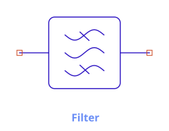
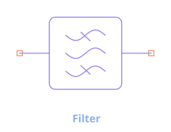

Dynamic Symbols (SDD, ZPort, SnP)
Most components have a fixed glyph. Some do not — their symbol is generated from a parameter rather than drawn once. For three of them the pin count itself follows the port count; for others the picture changes while the pins stay put. This chapter explains how those symbols are built and how to control them.
Why some symbols are dynamic
An N-port's symbol can't be a fixed picture — a 2-port and a 5-port need different numbers of
pins. For the SDD, ZPort, and
SnP, circuitRF generates the body and pins from the NumPorts
parameter. Change the port count and the symbol regrows, with pins landing on the connection grid
so wiring stays clean.
A second, smaller group keeps its pins and changes only what is drawn between them: the
Match network and the Filter redraw their passband picture
from Form, the Circulator turns the way Direction names, and the
two switch tiles draw their blade in the position State names. Those three are covered in the last
three sections below.
SDD — 2N differential pins


The SDD exposes 2N pins as differential ± pairs — for an N-port, pins ordered 1+, 1−, 2+, 2−, …. Each port's voltage is the difference across its pair: port p's voltage _vp = V(p+) − V(p−), which is exactly the _v1, _v2, … you use in the equations. This differential layout
lets each port float with its own reference rather than being forced to ground. (In the netlist
example the FET writes gate 0 drain 0 — each port's minus pin tied to ground.)
The I[port, weight] / Q[port] equation grammar is summarized under Components ›
SDD.
ZPort — N signal pins


The impedance N-port grows with NumPorts and is defined by its impedance matrix Z[p,q] (an N×N
grid of entries). Its pins are the N signal ports; the parameter editor lists one Z[p,q] row per
matrix entry.
SnP — arrangement, pitch & floating reference


The Touchstone block's symbol is the most configurable. Besides NumPorts and the File, three
options shape the symbol and its reference convention:
Pin arrangement (PinConfig)
How the N pins are laid out around the body (e.g. the default Standard arrangement). Choose the
layout that wires most cleanly into your schematic; it changes only the symbol geometry, not the
electrical behavior.
Pitch (Pitch)
The spacing between pins (e.g. Loose by default). Tighter pitch packs a high-port-count block
into less space; looser pitch leaves room to wire each port. Pins always remain on the connection
grid.
External reference pin (RefNode)
By default each port is referenced to ground, so an N-port shows N nets. Set RefNode = true
to expose a common external reference pin instead — now the block has N + 1 nets, and all
ports are measured against that shared reference rather than ground. Use this when the data
block's reference is not circuit ground (a floating measurement).
This is the "N-or-N+1" rule: a frequency-domain N-port lists either N nets (each port to ground) or N+1 nets (the last being the common reference). It applies to SnP, ZPort, and similar frequency-domain blocks — not to 2-terminal R/L/C.
Interpolation (InterpMode) and out-of-range behavior (ExtrapMode)
control how the file's data is sampled onto the analysis sweep — see
Components › SnP.
Match & Filter — the picture follows the Form


Form = BandpassThe Filter and the Match network share one glyph — the same picture, not a related one.
Impedance matching is a form of filtering, and the library says so. You tell the two apart by the
type label and the instance name (FLT1 against MN1), the same way the FET laws that share a
glyph are told apart.
The picture is a stack of waves with a line struck through each one the network blocks, so the shape is read straight off the schematic:
Form |
What is drawn | What passes |
|---|---|---|
Lowpass |
the high wave struck through | low frequencies |
Highpass |
the low wave struck through | high frequencies |
Bandpass |
the outer waves struck through | the band between F1 and F2 |
Both pins stay where they are, so changing Form never disturbs your wiring. Because the glyph
already says which shape the network is, Form is not captioned beside the symbol — it would
say the same thing twice. Nor is the band: Fc and F1/F2 are alternatives, so whichever pair
the form does not read would be a caption naming a frequency the filter is not at. Open the
properties panel for the numbers.
The Duplexer's glyph carries the same passband stack twice,
once in each arm, because a duplexer is two filters sharing an antenna node. Its own picture is
fixed — the two arms each have their own TxForm and RxForm, and a body drawn
from both would be unreadable at tile size.
Circulator — the arrow follows the Direction
A circulator is the one component in circuitRF that behaves differently in each direction, so which
way it turns is the first thing a reader needs off the page. Direction puts it there: CW
circulates 1 → 2 → 3 → 1 and CCW reverses it, and the arrow drawn inside the circle follows.
Direction is not a caption — it is the same parameter the model stamps from, so the picture and
the electrical behaviour cannot disagree. It is hidden from the schematic labels for that reason:
the arrow already says what a Direction = CW caption would say. The three pins stay exactly where
they are when it changes, so reversing a circulator never disturbs your wiring.
Full treatment: System Components › Circulator. Parameters: Components › Circulator.
Switch & Transfer Switch — the blade follows the State
Both switch tiles draw themselves in the position they are set to. State is a plain number
naming which throw is closed — 0 opens everything, 1 is the SPST's only throw, 1 or 2
selects one of the SPDT's — and the blade lifts or points accordingly.
That is worth more than tidiness. Because State is a parameter and not a pin, a
parametric sweep over it simulates every switch position in one
run — and the schematic redraws itself at each point, so a swept state is readable rather than
hidden in a dialog. State is therefore hidden from the schematic labels: the blade already says
it.
The pins never move; Throws (1 for the SPST tile, 2 for the SPDT) is what sets the pin count and
is not something to change by hand.
Full treatment: System Components › Switch. Parameters: Components › Switch and Transfer Switch.
See also: Components · System Components · Pins, Ports & Terms · Netlist format.